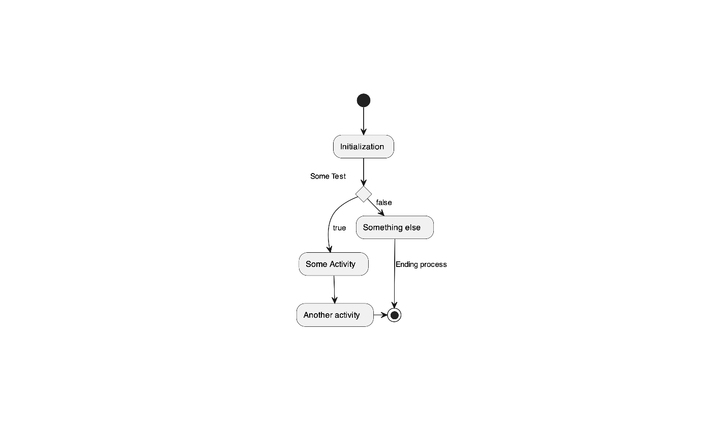

plantuml packagevignettes/BasicUsage.Rmd
BasicUsage.RmdThis package provides the functionality to create UML graphs using the PlantUML language.
The package does not come with the plantuml binary, which needs to be installed as well. repeated calling of this function updates the binary.
Now we plot in in a device using vector format (svg) as intermediate format, which is the default
plot( x = x # vector = TRUE )

#> [1] 0